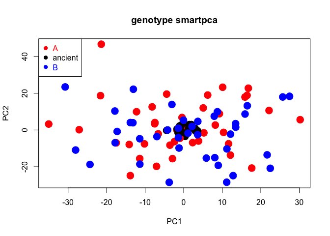

The package smartsnp runs fast and user-friendly computation of Principal Component Analysis (PCA) on single-nucleotide-polymorphism (SNP) data suitable for ancient, low-coverage and modern DNA. The package combines SNP scaling for genetic drift and projection of ancient samples onto a modern genetic PCA space (currently available only in Unix environment in the field-standard software EIGENSOFT) with permutation-based multivariate tests for population differences in genetic diversity (both location and dispersion). The package comprises three functions that run each analysis individually (smart_pca, smart_permanova, smart_permdisp), and a wrapper function (smart_mva) that runs any combination of the three standalone functions.
You can install the released version of smartsnp from CRAN with:
install.packages("smartsnp")This is an example of how to run PCA, PERMANOVA and PERMDISP controlling for genetic drift for the package’s dataset dataSNP including 10000 simulated SNPs in 100 samples (80 = modern, 20 = ancient).
#1/ Load package and label samples
library(smartsnp)
# Path to example genotype matrix "dataSNP"
pathToGenoFile = system.file("extdata", "dataSNP", package = "smartsnp")
#assign 50 samples to each of two groups
my_groups <- c(rep("A", 50), rep("B", 50))
#assign samples 1st to 10th per group to ancient
my_ancient <- c(1:10, 51:60)
#2/ Run PCA with truncated SVD (PCA 1 x PCA 2 axes) and assign results to object pcaR
pcaR <- smart_pca(snp_data = pathToGenoFile, sample_group = my_groups, sample_project = my_ancient)
#assign statistical results to objects pcaR_eigen, pcaR_load and pcaR_coord
pcaR_eigen <- pcaR$pca.eigenvalues; dim(pcaR_eigen) # extract eigenvalues
#> [1] 3 2
pcaR_load <- pcaR$pca.snp_loadings; dim(pcaR_load) # extract principal coefficients (SNP loadings)
#> [1] 4532 2
pcaR_coord <- pcaR$pca.sample_coordinates; dim(pcaR_coord) # extract principal components (sample position in PCA space)
#> [1] 100 4
#3/ Run PERMANOVA test (group location in PCA1 x PCA2 space after excluding ancient samples) and assign results to object permanovaR
permanovaR <- smart_permanova(snp_data = pathToGenoFile, sample_group = my_groups, target_space = "pca", sample_remove = my_ancient)
#assign sample summary to object permP
permP <- permanovaR$permanova.samples
#show PERMANOVA table
permanovaR$permanova.global_test
#> Df SumsOfSqs MeanSqs F.Model R2 Pr(>F)
#> group 1 175.8 175.82 0.45613 0.00581 0.6459
#> Residuals 78 30066.3 385.47 0.99419
#> Total 79 30242.1 1.00000
#4/ Run PERMDISP test (group dispersion in PCA1 x PCA2 space after excluding ancient samples) and assign results to object permdispR
permdispR <- smart_permdisp(snp_data = pathToGenoFile, sample_group = my_groups, sample_remove = my_ancient)
#assign sample summary to object permD
permD <-permdispR$permdisp.samples
#show PERMDISP table
permdispR$permdisp.global_test
#> Df Sum Sq Mean Sq F Pr(>F)
#> Groups 1 0.07254468 0.07254468 0.1911168 0.6693
#> Residuals 78 29.60747071 0.37958296 NA NA
#5/ Run PCA, PERMANOVA and PERMDISP in one run and assign results to object mvaR
mvaR <- smart_mva(snp_data = pathToGenoFile, sample_group = my_groups, sample_remove = my_ancient)
# assign statistical results to objects mvaR_eigen, mvaR_load and mvaR_coord
mvaR_eigen <- mvaR$pca$pca.eigenvalues # extract PCA eigenvalues
mvaR_load <- mvaR$pca$pca.snp_loadings # extract principal coefficients (SNP loadings)
mvaR_coord <- mvaR$pca$pca.sample_coordinates # extract PCA principal components (sample position in PCA space)
#show PERMANOVA table
mvaR$test$permanova.global_test
#> Df SumsOfSqs MeanSqs F.Model R2 Pr(>F)
#> group 1 11849 11849 0.97217 0.01231 0.9092
#> Residuals 78 950644 12188 0.98769
#> Total 79 962493 1.00000
#show PERMDISP table
mvaR$test$permdisp.global_test # extract PERMDISP table
#> Df Sum Sq Mean Sq F Pr(>F)
#> Groups 1 0.07254468 0.07254468 0.1911168 0.6661
#> Residuals 78 29.60747071 0.37958296 NA NA
#assign sample summary to object mvaS
mvaS <- mvaR$test$test_samples
#NOTE 1: Modify argument pc_axes to set the number of computed PCA axes (defaults: pc_axes = 2, program_svd = "RSpectra")
#use program_svd = "bootSVD" for computing all PCA axes, where pc_axes has no effect on computations
#NOTE 2: Missing values in dataset can only be coded as 9 (default: missing_value = 9) or NA (missing_value = NA)
#SNPs with missing values are removed by default (missing_impute = "remove")
#use missing_impute = "mean" for imputing missing values with SNP means
#NOTE 3: arguments sample_remove and snp_remove remove any set of samples (by column number) and SNPs (by row number), respectively
#defaults: sample_remove = FALSE, snp_remove = FALSE
#NOTE 4: use argument sample_project to specify ancient samples by row number (default: sample_project = FALSE)
#ancient samples are assumed to include missing values
#if specified, ancient samples are always removed from PCA, PERMANOVA and PERMDISP computations
#use argument pc_project to set the PCA space onto which ancient samples are projected (default: pc_project = c(1:2) for PCA 1 x PCA2 space)
#6/ Plot PCA 1 x PCA 2
#create colors for samples groups
cols <- c("red", "blue")
#create color vector (group A = red, group B = blue, ancient samples = black)
my_groups[my_ancient] <- "ancient"; cols = c("red", "black", "blue")
#plot
plot(pcaR$pca.sample_coordinates[,c("PC1","PC2")], cex = 2, col = cols[as.factor(my_groups)], pch = 19, main = "genotype smartpca")
legend("topleft", legend = levels(as.factor(my_groups)), cex = 1, pch = 19, col = cols, text.col = cols)